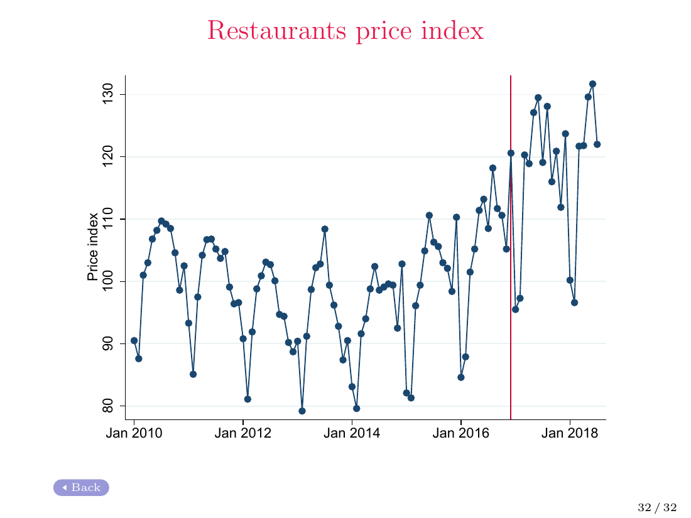

Derive stable AR(1) moments, forecasts and initialization limits
Useful first: Distinguish stationarity from weak dependence and limit-theorem roles, Derive MA(1) moments and finite-reach dependence
Lesson outline
- 02IntroductionSee the main question, learning objectives and prerequisites.
- 03Key definitions and conceptsGet familiar with the important terms and notation.
- 04AR(1), random walks and integrationDoes a shock fade away, or does it permanently change the level of a series?
- 05Stable AR(1): assumptions before momentsAn autoregression of order one obeys
- 06Why AR(1) correlation fadesSubstitution over the stated quantities future periods gives
- 07AR(1), random walks and integrationDoes a shock fade away, or does it permanently change the level of a series?
- 08Worked exampleFollow a complete application of the reasoning.
- 09Practise the reasoningWork through written tasks, with optional support and solutions.
- 10Check your reasoning: an offline quizCheck your choices and see feedback without a connection.
- 11Check your understandingReview the key distinctions and check what you can explain.
- 12Test yourself laterTry another prepared question before rereading.
- 13SourcesFind the materials and limits behind the lesson.
Introduction
In this lesson, derive stable AR(1) moments, forecasts and initialization limits.
2.1 What you’ll learn
- Derive stable AR(1) moments, lag decay and forecasts
- Distinguish stationary initialization from finite-date convergence.
2.2 Before you begin
- Distinguish stationarity from weak dependence and limit-theorem roles
- Derive MA(1) moments and finite-reach dependence
Check the foundations
For independent zero-mean terms \(A,B\), why is \(\operatorname{Var}(A+B)=\operatorname{Var}(A)+\operatorname{Var}(B)\)? Does a strictly stationary finite-second-moment process need independent adjacent values?
Reveal foundation explanation
The variance cross term is twice \(\operatorname{Cov}(A,B)=0\) under independence. Strict stationarity preserves shifted joint distributions but permits adjacent dependence.
Key definitions and concepts
- Stable AR(1): The autoregression with coefficient magnitude below1 and specified innovation assumptions.
- Stationary initialization: An initial distribution compatible with time-invariant process moments.
- Conditional forecast: The expected future value given the stated current/past information.
AR(1), random walks and integration
Does a shock fade away, or does it permanently change the level of a series? Comparing a stable autoregression with a random walk explains why apparent persistence changes the validity of ordinary regression asymptotics. It also separates removing a deterministic trend from differencing an accumulated random shock.

The diagram follows and26–30; stationary moments/independent innovations are explained in the preceding Week3 note.
Stable AR(1): assumptions before moments
An autoregression of order one obeys
with i.i.d. zero-mean innovations of finite variance \(\sigma_\varepsilon^2>0\). Future innovations must be independent of the initial value/past.
The stability condition is \(|\rho|<1\). To derive the lecture's constant moments from the start, take a covariance-stationary initialization;
the recurrence and stability alone do not guarantee that an arbitrary fixed or random \(x_0\) has the stationary distribution. The lecture omits that initialization qualification on p.15;
the textbook explicitly assumes covariance stationarity in the displayed moment argument.
Under stationary initialization, the mean satisfies \(\mu=\rho\mu\), giving \(\mu=0\) because \(\rho\ne1\). Independence of the innovation from the past gives
The positive denominator is why a nondegenerate finite stationary variance is compatible with \(|\rho|<1\). A recurrence started instead at fixed zero has
which approaches the stationary variance but is not equal to it at every finite date. This last expression is Explanation qualification: repeatedly substitute the recurrence, then add variances of independent shocks. It shows exactly what the missing initialization changes.
Why AR(1) correlation fades
Substitution over \(h\) future periods gives
Future innovations have zero covariance with \(x_t\), so under the stationary moments
Thus correlation tends to zero geometrically when \(|\rho|<1\). Negative \(\rho\) alternates the sign; a \(\rho\) near one decays slowly in a short sample but remains stable. Under zero conditional-mean future innovations, \(E[x_{t+h}\mid x_t]=\rho^h x_t\) approaches zero. This is the mechanism behind fading shocks, rather than a claim that adjacent values are independent.
AR(1), random walks and integration
Read the full checked source context
Does a shock fade away, or does it permanently change the level of a series? Comparing a stable autoregression with a random walk explains why apparent persistence changes the validity of ordinary regression asymptotics. It also separates removing a deterministic trend from differencing an accumulated random shock.
The diagram follows and26–30; stationary moments/independent innovations are explained in the preceding Week3 note.
Stable AR(1): assumptions before moments
An autoregression of order one obeys
with i.i.d. zero-mean innovations of finite variance \(\sigma_\varepsilon^2>0\). Future innovations must be independent of the initial value/past.
The stability condition is \(|\rho|<1\). To derive the lecture's constant moments from the start, take a covariance-stationary initialization;
the recurrence and stability alone do not guarantee that an arbitrary fixed or random \(x_0\) has the stationary distribution. The lecture omits that initialization qualification on p.15;
the textbook explicitly assumes covariance stationarity in the displayed moment argument.
Under stationary initialization, the mean satisfies \(\mu=\rho\mu\), giving \(\mu=0\) because \(\rho\ne1\). Independence of the innovation from the past gives
The positive denominator is why a nondegenerate finite stationary variance is compatible with \(|\rho|<1\). A recurrence started instead at fixed zero has
which approaches the stationary variance but is not equal to it at every finite date. This last expression is Explanation qualification: repeatedly substitute the recurrence, then add variances of independent shocks. It shows exactly what the missing initialization changes.
Why AR(1) correlation fades
Substitution over \(h\) future periods gives
Future innovations have zero covariance with \(x_t\), so under the stationary moments
Thus correlation tends to zero geometrically when \(|\rho|<1\). Negative \(\rho\) alternates the sign; a \(\rho\) near one decays slowly in a short sample but remains stable. Under zero conditional-mean future innovations, \(E[x_{t+h}\mid x_t]=\rho^h x_t\) approaches zero. This is the mechanism behind fading shocks, rather than a claim that adjacent values are independent.
Random walk: constant mean does not imply stationarity
Set \(\rho=1\). Repeated substitution gives
For \(x_0\) independent of the innovations,
If \(x_0=c\) is fixed, these become \(E[x_t]=c\) and \(\operatorname{Var}(x_t)=t\sigma_\varepsilon^2\). Increasing variance prevents covariance stationarity even with a constant mean. Source qualification: p.26 first allows an independent initial value but then writes \(E[x_0]=x_0\) and drops \(\operatorname{Var}(x_0)\).
Those reductions require fixed \(x_0\); for random \(x_0\) retain its expectation and variance.
The textbook distinguishes the cases explicitly.
Conditional prediction is
A shock to today's level enters every future level with coefficient one. This contrasts with \(\rho^h\) for stable AR(1), and explains permanent versus fading shocks. A random walk is one example of a unit-root process. A high sample lag-one correlation is suggestive of persistence, but it does not itself prove an exact unit root.
Drift and deterministic trend are different
For a random walk with drift \(a\),
The deterministic mean trend \(at\) does not remove accumulated random shocks. Subtracting \(at\) leaves a random walk.
By contrast, a trend-stationary process \(z_t=b_0+b_1t+v_t\) has stationary weakly dependent deviations \(v_t\); removing the correct deterministic trend exposes those deviations.
The lecture's “include a trend” reassurance on p.18 concerns that case and still requires valid regression assumptions. It is not a remedy for any series that rises over time.
Persistence can exist without a visible trend (the lecture names interest rates, inflation and unemployment), and a trend can exist without persistent stochastic shocks.
Integration and first differences
In this course's framing, an \(I(0)\) process has the weak-dependence properties needed for ordinary limit-theorem reasoning; an \(I(1)\) level requires one difference to obtain such a process. For the random walk,
so differences are i.i.d. and \(I(0)\) even though levels are \(I(1)\). With drift the difference is \(a+\varepsilon_t\). General \(I(1)\) differences need not be i.i.d.; they may retain weak serial dependence. Differencing changes the modeled variable from its level to its period-to-period change, so coefficients must be interpreted accordingly. It does not automatically cure endogeneity or every inference problem.
For a deterministic trend, \(\Delta z_t=b_1+\Delta v_t\), which also removes its changing mean but may alter short-run dependence. Choosing between detrending and differencing therefore requires a process argument; “both remove a visible trend” is insufficient. Online verification: Hyndman and Athanasopoulos, Forecasting: Principles and Practice, 3rd ed., §9.1 “Stationarity and differencing,” subsections “Differencing” and “Random walk model,” confirms the random-walk transformation and warns that unnecessary differencing can introduce autocorrelation. Consulted author textbook section.
What the lecture does and does not test
advises looking at lag-one correlation and names Dickey–Fuller and augmented Dickey–Fuller tests, referring to textbook Chapter18.2. The supplied slides do not provide those tests' regressions, null distributions, critical values or worked applications, so naming them is not a prepared test procedure.
The instruction “Detrend first!” is supported here only as a warning that a deterministic trend can inflate estimated autocorrelation; it does not mean detrending makes every unit-root series stationary.
Formal unit-root-testing instruction beyond the source's pointers remains outside this note.
Spurious regression is the danger that unrelated persistent series in levels display a misleading apparent relationship, potentially accompanied by large fit or seemingly significant usual test statistics. Shared-looking movements in one observed history need not represent an economic connection.
If an accumulated random shock is mistaken for a deterministic trend, removing a fitted line still leaves the stochastic persistence; the weak-dependence conditions justifying the ordinary inference above have not thereby been restored.
This is the warning on lecture p.30, rather than a claim that every regression containing an \(I(1)\) variable is necessarily spurious. The lecture postpones formal analysis.

The source's restaurant index shows variation and a later level change. Together with the simulated comparison on p.9 it motivates checking stability, but supplies no fitted DGP or formal test result. The red vertical marker has no explained causal interpretation in the supplied page; none is assigned here.
Worked example
Prompt: For \(x_t=\rho x_{t-1}+\varepsilon_t\), take \(\rho=0.5\), i.i.d. zero-mean innovations of variance 3, independent of the initial value/past. Under covariance-stationary initialization derive mean, variance, lag-2 covariance/correlation and forecast from current \(x_t=8\).
Compare with initialization \(x_0=0\) by computing variance at date 2. Explain stability, shock decay and the distinction between a near-unit-root stable coefficient and an exact random walk.
Does the recurrence with \(|\rho|<1\) alone force stationary finite-date moments from an arbitrary initialization?
Solution: With \(|\rho|<1\) and stationary initialization, \(\mu=\rho\mu\) implies \(\mu=0\). Independence gives \(\sigma_x^2=\rho^2\sigma_x^2+\sigma_\varepsilon^2\), hence \(\sigma_x^2=4.00000000\).
Iteration gives \(x_{t+h}=\rho^h x_t+\sum_{j=1}^h\rho^{h-j}\varepsilon_{t+j}\). Future innovations have zero covariance/conditional mean given the past, so lag \(2\) covariance is \(\rho^2\sigma_x^2=1.00000000\), correlation \(\rho^2=0.25000000\) and conditional forecast \(\rho^2(8)=2.00000000\).
With fixed zero initialization, variance at date \(2\) is \(\sigma_\varepsilon^2(1-\rho^{2t})/(1-\rho^2)=3.75000000\); it approaches but generally is not the stationary variance at a finite date.
Thus stability/recurrence alone does not supply stationary initialization. Powers decay to zero;
negative \(\rho\) alternates signs and a value near one decays slowly without equaling a unit root. At \(\rho\) one shocks accumulate instead.
Constant population moments and sample appearances are distinct.
Practise the reasoning
Write your reasoning before revealing an explanation. Begin with support, then apply the ideas to another situation.
9.1 Written exercise 1
For \(x_t=\rho x_{t-1}+\varepsilon_t\), take \(\rho=-0.5\), i.i.d. zero-mean innovations of variance 4, independent of the initial value/past.
Solve the following:
- Under covariance-stationary initialization derive mean, variance, lag-3 covariance/correlation and forecast from current \(x_t=6\).
- Compare with initialization \(x_0=0\) by computing variance at date 3.
- Explain stability, shock decay and the distinction between a near-unit-root stable coefficient and an exact random walk.
- Does the recurrence with \(|\rho|<1\) alone force stationary finite-date moments from an arbitrary initialization?
Show a hint
Pause before calculating or choosing an explanation:
- What quantities, actors or outcomes are being compared? Write their roles, units and dates beside them.
- Which condition decides whether the relationship applies? Check the relevant definition before using a formula or classifying the case.
- What would have to remain fixed for your comparison to be meaningful? Work through one link in the reasoning at a time.
- How could you check the direction, boundary case or alternative explanation before stating your conclusion?
A local draft for your own study.
Reveal explanation
Solution: With \(|\rho|<1\) and stationary initialization, \(\mu=\rho\mu\) implies \(\mu=0\). Independence gives \(\sigma_x^2=\rho^2\sigma_x^2+\sigma_\varepsilon^2\), hence \(\sigma_x^2=5.33333333\).
Iteration gives \(x_{t+h}=\rho^h x_t+\sum_{j=1}^h\rho^{h-j}\varepsilon_{t+j}\). Future innovations have zero covariance/conditional mean given the past, so lag \(3\) covariance is \(\rho^3\sigma_x^2=-0.66666667\), correlation \(\rho^3=-0.12500000\) and conditional forecast \(\rho^3(6)=-0.75000000\).
With fixed zero initialization, variance at date \(3\) is \(\sigma_\varepsilon^2(1-\rho^{2t})/(1-\rho^2)=5.25000000\); it approaches but generally is not the stationary variance at a finite date.
Thus stability/recurrence alone does not supply stationary initialization. Powers decay to zero;
negative \(\rho\) alternates signs and a value near one decays slowly without equaling a unit root. At \(\rho\) one shocks accumulate instead.
Constant population moments and sample appearances are distinct.
9.2 Written exercise 2
For \(x_t=\rho x_{t-1}+\varepsilon_t\), take \(\rho=0.8\), i.i.d. zero-mean innovations of variance 2, independent of the initial value/past.
Solve the following:
- Under covariance-stationary initialization derive mean, variance, lag-2 covariance/correlation and forecast from current \(x_t=10\).
- Compare with initialization \(x_0=0\) by computing variance at date 2.
- Explain stability, shock decay and the distinction between a near-unit-root stable coefficient and an exact random walk.
- Does the recurrence with \(|\rho|<1\) alone force stationary finite-date moments from an arbitrary initialization?
A local draft for your own study.
Reveal explanation
Solution: With \(|\rho|<1\) and stationary initialization, \(\mu=\rho\mu\) implies \(\mu=0\). Independence gives \(\sigma_x^2=\rho^2\sigma_x^2+\sigma_\varepsilon^2\), hence \(\sigma_x^2=5.55555556\).
Iteration gives \(x_{t+h}=\rho^h x_t+\sum_{j=1}^h\rho^{h-j}\varepsilon_{t+j}\). Future innovations have zero covariance/conditional mean given the past, so lag \(2\) covariance is \(\rho^2\sigma_x^2=3.55555556\), correlation \(\rho^2=0.64000000\) and conditional forecast \(\rho^2(10)=6.40000000\).
With fixed zero initialization, variance at date \(2\) is \(\sigma_\varepsilon^2(1-\rho^{2t})/(1-\rho^2)=3.28000000\); it approaches but generally is not the stationary variance at a finite date.
Thus stability/recurrence alone does not supply stationary initialization. Powers decay to zero;
negative \(\rho\) alternates signs and a value near one decays slowly without equaling a unit root. At \(\rho\) one shocks accumulate instead.
Constant population moments and sample appearances are distinct.
9.3 Written exercise 3
For \(x_t=\rho x_{t-1}+\varepsilon_t\), take \(\rho=-0.6\), i.i.d. zero-mean innovations of variance 5, independent of the initial value/past.
Solve the following:
- Under covariance-stationary initialization derive mean, variance, lag-3 covariance/correlation and forecast from current \(x_t=5\).
- Compare with initialization \(x_0=0\) by computing variance at date 4.
- Explain stability, shock decay and the distinction between a near-unit-root stable coefficient and an exact random walk.
- Does the recurrence with \(|\rho|<1\) alone force stationary finite-date moments from an arbitrary initialization?
A local draft for your own study.
Reveal explanation
Solution: With \(|\rho|<1\) and stationary initialization, \(\mu=\rho\mu\) implies \(\mu=0\). Independence gives \(\sigma_x^2=\rho^2\sigma_x^2+\sigma_\varepsilon^2\), hence \(\sigma_x^2=7.81250000\).
Iteration gives \(x_{t+h}=\rho^h x_t+\sum_{j=1}^h\rho^{h-j}\varepsilon_{t+j}\). Future innovations have zero covariance/conditional mean given the past, so lag \(3\) covariance is \(\rho^3\sigma_x^2=-1.68750000\), correlation \(\rho^3=-0.21600000\) and conditional forecast \(\rho^3(5)=-1.08000000\).
With fixed zero initialization, variance at date \(4\) is \(\sigma_\varepsilon^2(1-\rho^{2t})/(1-\rho^2)=7.68128000\); it approaches but generally is not the stationary variance at a finite date.
Thus stability/recurrence alone does not supply stationary initialization. Powers decay to zero;
negative \(\rho\) alternates signs and a value near one decays slowly without equaling a unit root. At \(\rho\) one shocks accumulate instead.
Constant population moments and sample appearances are distinct.
9.4 Another chance to practise
A stable AR(1) starts at fixed zero.
Solve the following:
- May its date-one variance be replaced by the stationary variance without qualification?
A local draft for your own study.
Reveal explanation
No: date-one variance is the innovation variance, while the stationary variance includes an infinite accumulation of past shocks. They generally differ; state initialization and use the finite-date sum.
Check your reasoning: an offline quiz
Choose one answer per question. Check individual answers or check the whole quiz. Each option includes feedback on the reasoning, and everything works offline.
Reveal explanation
Solve \(V=\rho^2 V+3\) for stationary variance V, giving \(3/(1-0.25)=4\).
Reveal explanation
Both use \(\rho^2=0.25\); forecast \(0.25\times 8=2\).
Reveal explanation
With zero initialization, date 2 variance 3.75 approaches the stationary variance 4.
Check your understanding
- Derive stable AR(1) moments, lag decay and forecasts
- Distinguish stationary initialization from finite-date convergence.
Test yourself later
Return to these questions after a break, before rereading the explanation. Use a question you have not just viewed.
12.1 Review question 1
For \(x_t=\rho x_{t-1}+\varepsilon_t\), take \(\rho=0.9\), i.i.d. zero-mean innovations of variance 1, independent of the initial value/past.
Solve the following:
- Under covariance-stationary initialization derive mean, variance, lag-4 covariance/correlation and forecast from current \(x_t=12\).
- Compare with initialization \(x_0=0\) by computing variance at date 3.
- Explain stability, shock decay and the distinction between a near-unit-root stable coefficient and an exact random walk.
- Does the recurrence with \(|\rho|<1\) alone force stationary finite-date moments from an arbitrary initialization?
A local draft for your own study.
Reveal explanation
Solution: With \(|\rho|<1\) and stationary initialization, \(\mu=\rho\mu\) implies \(\mu=0\). Independence gives \(\sigma_x^2=\rho^2\sigma_x^2+\sigma_\varepsilon^2\), hence \(\sigma_x^2=5.26315789\).
Iteration gives \(x_{t+h}=\rho^h x_t+\sum_{j=1}^h\rho^{h-j}\varepsilon_{t+j}\). Future innovations have zero covariance/conditional mean given the past, so lag \(4\) covariance is \(\rho^4\sigma_x^2=3.45315789\), correlation \(\rho^4=0.65610000\) and conditional forecast \(\rho^4(12)=7.87320000\).
With fixed zero initialization, variance at date \(3\) is \(\sigma_\varepsilon^2(1-\rho^{2t})/(1-\rho^2)=2.46610000\); it approaches but generally is not the stationary variance at a finite date.
Thus stability/recurrence alone does not supply stationary initialization. Powers decay to zero;
negative \(\rho\) alternates signs and a value near one decays slowly without equaling a unit root. At \(\rho\) one shocks accumulate instead.
Constant population moments and sample appearances are distinct.
12.2 Review question 2
For \(x_t=\rho x_{t-1}+\varepsilon_t\), take \(\rho=0.4\), i.i.d. zero-mean innovations of variance 6, independent of the initial value/past.
Solve the following:
- Under covariance-stationary initialization derive mean, variance, lag-3 covariance/correlation and forecast from current \(x_t=15\).
- Compare with initialization \(x_0=0\) by computing variance at date 2.
- Explain stability, shock decay and the distinction between a near-unit-root stable coefficient and an exact random walk.
- Does the recurrence with \(|\rho|<1\) alone force stationary finite-date moments from an arbitrary initialization?
A local draft for your own study.
Reveal explanation
Solution: With \(|\rho|<1\) and stationary initialization, \(\mu=\rho\mu\) implies \(\mu=0\). Independence gives \(\sigma_x^2=\rho^2\sigma_x^2+\sigma_\varepsilon^2\), hence \(\sigma_x^2=7.14285714\).
Iteration gives \(x_{t+h}=\rho^h x_t+\sum_{j=1}^h\rho^{h-j}\varepsilon_{t+j}\). Future innovations have zero covariance/conditional mean given the past, so lag \(3\) covariance is \(\rho^3\sigma_x^2=0.45714286\), correlation \(\rho^3=0.06400000\) and conditional forecast \(\rho^3(15)=0.96000000\).
With fixed zero initialization, variance at date \(2\) is \(\sigma_\varepsilon^2(1-\rho^{2t})/(1-\rho^2)=6.96000000\); it approaches but generally is not the stationary variance at a finite date.
Thus stability/recurrence alone does not supply stationary initialization. Powers decay to zero;
negative \(\rho\) alternates signs and a value near one decays slowly without equaling a unit root. At \(\rho\) one shocks accumulate instead.
Constant population moments and sample appearances are distinct.
Sources
Show materials and lesson scope
- 2026_Lecture3_print.pdf, physical PDF p. 15–18, 25–30
- 2026_Lecture3_print.pdf, physical PDF p. 15–18, 26–30
- 2026_Lecture3_print.pdf, physical PDF p. 15–16
- Wooldridge, Introductory Econometrics, 5th ed., printed p. 383 (PDF p. 411)
- 2026_Lecture3_print.pdf, physical PDF p. 17, 27
- Wooldridge, Introductory Econometrics, 5th ed., printed p. 384 (PDF p. 412)
- 2026_Lecture3_print.pdf, physical PDF p. 26
- Wooldridge, Introductory Econometrics, 5th ed., printed p. 392 (PDF p. 420)
- 2026_Lecture3_print.pdf, physical PDF p. 27, 30
- 2026_Lecture3_print.pdf, physical PDF p. 18, 28, 30
- Wooldridge, Introductory Econometrics, 5th ed., printed p. 394 (PDF p. 422)
- Wooldridge, Introductory Econometrics, 5th ed., printed p. 395 (PDF p. 423)
- 2026_Lecture3_print.pdf, physical PDF p. 29
- Wooldridge, Introductory Econometrics, 5th ed., printed p. 396 (PDF p. 424)
- 2026_Lecture3_print.pdf, physical PDF p. 18, 29–30
- Wooldridge, 5th ed., printed p.398 (PDF p.426)
- 2026_Lecture3_print.pdf, physical PDF p. 30
- Wooldridge, Introductory Econometrics, 5th ed., printed p. 397 (PDF p. 425)
- 2026_Lecture3_print.pdf, physical PDF p.30
- Wooldridge, 5th ed., printed p.395 (PDF p.423)
- 2026_Lecture3_print.pdf, physical PDF p. 11, 32
Numerical and contextual illustrations are hypothetical unless explicitly described as a reported result. Historical data, model assumptions and unresolved source differences retain their stated limits.
These exercises are for self-study. Viewing a prepared item or solution may make that item unsuitable as a fresh check in a tutor chat. This page does not record an assessed learning result.